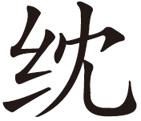

《国语》
公父文伯退朝[1]，朝其母[2]，其母方绩[3]。文伯曰：“以歜之家[4]，而主犹绩[5]，惧干季孙之怒也[6]。其以歜为不能事主乎？”其母叹曰：“鲁其亡乎？使僮子备官[7]，而未之闻邪[8]？居，吾语女[9]。昔圣王之处民也，择瘠土而处之[10]，劳其民而用之，故长王天下。夫民劳则思，思则善心生；逸则淫，淫则忘善，忘善则恶心生。沃土之民不材[11]，淫也。瘠土之民，莫不向义[12]，劳也。
“是故天子大采朝日[13]，与三公九卿祖识地德[14]，日中考政，与百官之政事。师尹惟旅牧相，宣序民事[15]。少采夕月[16]，与太史司载，纠虔天刑[17]。日入，监九御[18]，使洁奉禘郊之粢盛[19]，而后即安。诸侯朝修天子之业命[20]，昼考其国职[21]，夕省其典刑[22]，夜儆百工[23]，使无慆淫[24]，而后即安。卿大夫朝考其职，昼讲其庶政，夕序其业，夜庀其家事[25]，而后即安。士朝受业，昼而讲贯[26]，夕而习复，夜而计过，无憾[27]，而后即安。自庶人以下，明而动，晦而休[28]，无日以怠。王后亲织玄[29]；公侯之夫人，加之以[30]。卿之内子为大带[31]，命妇成祭服[32]，列士之妻加之以朝服[33]。自庶士以下，皆衣其夫[34]。社而赋事[35]，烝而献功[36]，男女效绩，愆则有辟[37]，古之制也。君子劳心，小人劳力，先王之训也。自上以下，谁敢淫心舍力[38]？今我寡也，尔又在下位[39]，朝夕处事，犹恐忘先人之业。况有怠惰，其何以避辟？吾冀而朝夕修我[40]，曰：‘必无废先人。’尔今曰：‘胡不自安？’以是承君之官，余惧穆伯之绝祀也。”
仲尼闻之曰：“弟子志之[41]，季氏之妇不淫矣！”
[1]公父文伯：鲁国下大夫。名歜，即季孙歜。
[2]朝：古代谒见君王叫朝。谒见长辈也可以叫朝。
[3]绩：绩麻。用麻纺线。
[4]歜：文伯自称其名。
[5]主：主人。这里指家长，因为父亲已死，母亲最尊。
[6]干：冒犯。季孙：指季康子，当时鲁国正卿，首席执政大臣。
[7]僮子：愚昧无知的年轻人。备官：充任官职。
[8]未之闻：未闻之。指没有听说治国的大道理。
[9]居：坐下。吾语女：我说给你。
[10]瘠土：瘠薄的土地。
[11]沃土：肥沃的土地。材：人才。
[12]向义：向往道义。
[13]大采：五彩礼服。朝日：天子在春分之日举行仪式叫朝日。
[14]识地德：熟悉土地的性质和恩德。
[15]师尹：官名。旅：当是率领之意。牧相：各国诸侯的大臣。
[16]宣序民事：宣布民事的次序和安排。
[17]少采：夕月：秋分祭天。大史：即太史，西周、春秋时期的太史掌管天文历法、祭祀等，是很重要的朝廷大臣。纠：通究，探究。天刑：天象显示的吉凶情况。
[18]九御：九嫔之官。掌管祭祀物品供应的。
[19]禘：禘祭，由天子主持的祭祀。郊：天子主持的郊祭。粢（zī）：黍稷，谷子高粱，代指五谷。
[20]业命：事业和命令。
[21]国职：国家大事。
[22]典刑：法令条文。
[23]儆：告诫。百工：百官。
[24]慆淫：怠惰放荡。
[25]庀（pí）：治理。
[26]讲贯：讲解贯穿，即学习贯穿。
[27]憾：遗憾。
[28]晦：夜晚。
[29]玄（dǎn）：黑色悬挂在帽子上的黑绳。
[30]（hóng yán）：都是冕上的部件，是系冕的丝绳。
[31]内子：卿的正妻为内子。大带：贵族袍服腰间系的大带。
[32]命妇：大夫的妻子称命妇。祭服：祭祀时所穿的黑色礼服。
[33]列士：所有的士。朝服：上朝所穿的官服。
[34]衣其夫：给他的丈夫做衣服。
[35]社：春社社祭。
[36]烝：冬祭名。献功：报告农事成功。
[37]愆：过错。辟：处罚。
[38]淫心舍力：不上心而且偷懒不卖力气。
[39]下位：下大夫的位置。
[40]冀：希望。而：通“尔”，你。修我：修养自己的品德。
[41]志之：记住敬姜的话。
【译文】
公父文伯退朝回家，去拜见母亲，他的母亲正在绩麻。文伯说：“像我这样的家庭，而家长还要绩麻，恐怕会惹季康子生气，他会以为我不能敬养母亲啊！”他的母亲敬姜叹口气道：“鲁国难道要灭亡吗？怎么让糊涂的人充当官员，竟这样的没有听过治国的道理？坐下，我给你讲一讲。从前圣明的君王领导百姓，选择贫瘠的土地安置他们，让他们很辛劳而领导支配他们，所以能够长期统治天下。百姓劳累辛苦就会思考节俭思考人生之不易，思考这些问题就会产生善良的心理；安逸闲适就会放纵淫荡，一放纵淫荡就会忘记善念，忘记善念就会产生恶念。肥沃富足地方的百姓不出人才，就是太清闲放纵了。贫瘠地方的百姓，没有不向往仁义的，就因为劳苦。
“所以天子在春分之日穿着五色礼服去祭日，并与三公九卿共同熟悉大地生长万物的规律，中午要考察国家政治以及百官的政绩。师尹统率地方官员，宣布部署对于地方百姓的政令。傍晚，穿三色服装祭月，并和掌管天文的太史、司载共同恭恭敬敬地观察上天显示的祸福吉凶。到晚上要监视九御，要求他们把祭祀的物品收拾得干干净净，然后才安心睡觉。诸侯早晨要研究天子的命令和自己应该办的职责，白天要考察国家大事，晚上要学习熟悉国家的法令条文，夜里要告诫属下百官，使他们不能懒惰放纵，然后才安息睡觉。卿大夫早晨要思考自己的职责，白天要办理各种具体事务，晚上整理总结一天来的工作，没有什么遗憾和缺失，然后才安心睡觉。自普通百姓以下，都是天亮就起来劳动，到晚上才休息，没有一天懈怠。王后要亲自织天子黑色悬挂在冕上的丝带，公侯夫人要为夫君做系冕的小丝带，卿的夫人要做大带，大夫的妻子要做祭服，士的妻子要再加上做朝服。自一般的士人以下的夫人，都亲自给丈夫做衣服。春社向神明祷告农事开始，冬祭则要禀告汇报农事成功。男男女女各自要效力工作，有过错就要处罚，这是自古以来的制度。君子从事脑力劳动，小人从事体力劳动，这是先王的遗训。自上而下，谁敢心思放荡而不尽心竭力劳动呢？如今我是寡妇，你又在下位，即使早晚劳作，还要担心忘记先人的事业。何况如果有所懈怠懒惰，怎么可以躲避开处罚呢？我很希望你每天都提醒我说：‘千万不要荒废先人的事业。’你今天却说：‘为什么不自己安逸清闲？’用这种态度担任国君的职官，我害怕穆伯将要断绝祭祀。”
孔子听到这件事后说：“弟子们记住，季氏家的这位夫人，可以说是勤劳而不放纵啊！”
【评析】
《国语》本来是以记言为主的史书，本篇最明显地体现了这一特点。这是一篇劳动的赞歌，用敬姜教育儿子的方式阐释了提倡勤劳反对放纵安逸的观点。敬姜的观点可以概括出以下几点：一、“民劳则思，思则善心生；逸则淫，淫则忘善，忘善则恶心生。”这种观点是有道理的也有现实根据。二、从天子到庶民，从王后到民妇，每人每天都有自己的职责，都要尽自己的本分，都要劳动。到年终都要考绩，这是古制。三、“君子劳心，小人劳力，先王之训也。自上以下，谁敢淫心舍力。”虽然社会分工不同，地位不同，但都要尽心尽力，做好自己本职工作。这样，全天下才会安定。这种观点是以每个人各自有自己的工作职责，都要完成自己应尽的义务为前提，如果从宏观来看，劳动是人类发展和进步的前提，也是每个个体生命的必需，这一点是永恒的真理。离开劳动，人生便黯淡无光，便没有任何意义，失去了价值。
敬姜是鲁国季孙氏家的主妇，季孙氏掌门人一直是鲁国执政的首席官员，除季平子时期有一段时间是孟孙氏掌门人孟僖子做首席执政官外，一直都是季孙氏执政。作为这样家族的主妇能有如此的见识，难能可贵。孔子的赞美也很值得品味。季康子时期是孔子晚年，孔子对于季氏一直有看法，孔子一生，十七岁前是季武子，十七岁到三十多岁季平子，三十多岁到六十多岁是季桓子，晚年则是季康子。孔子在鲁国未能实现政治理想，最主要的障碍便是季孙氏。但孔子对于季孙氏家的主妇敬姜依然能够正确评价，显示出公正的态度，这便是圣人。